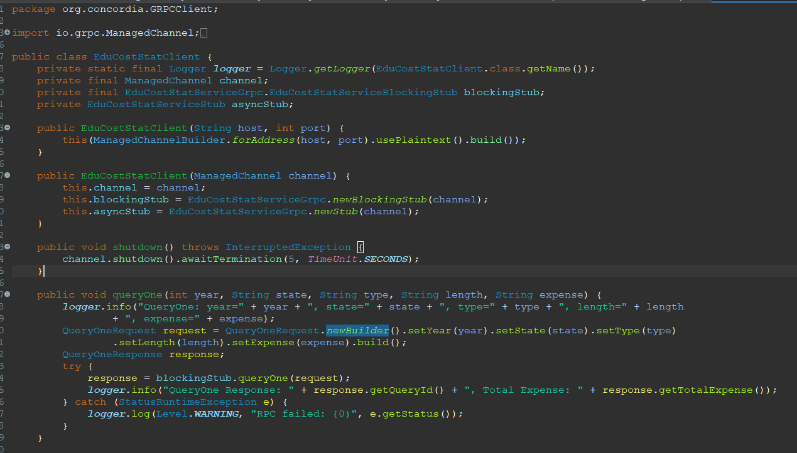
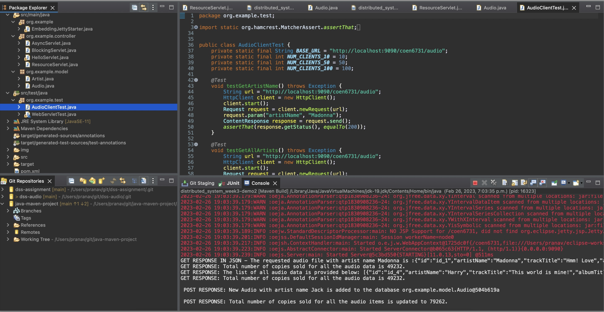
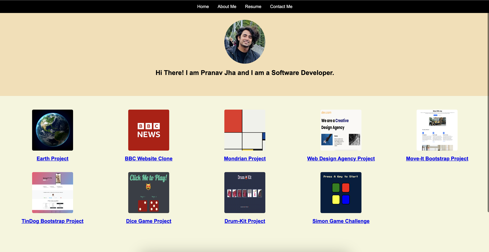
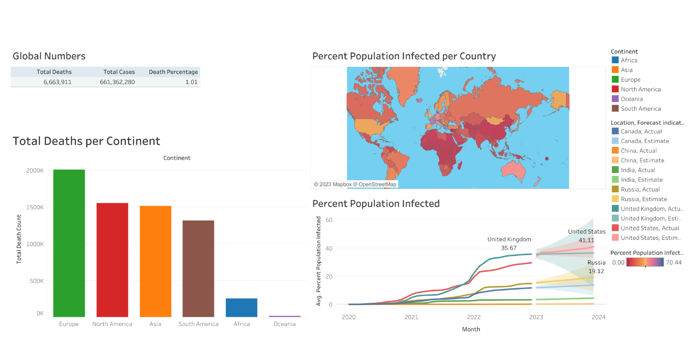
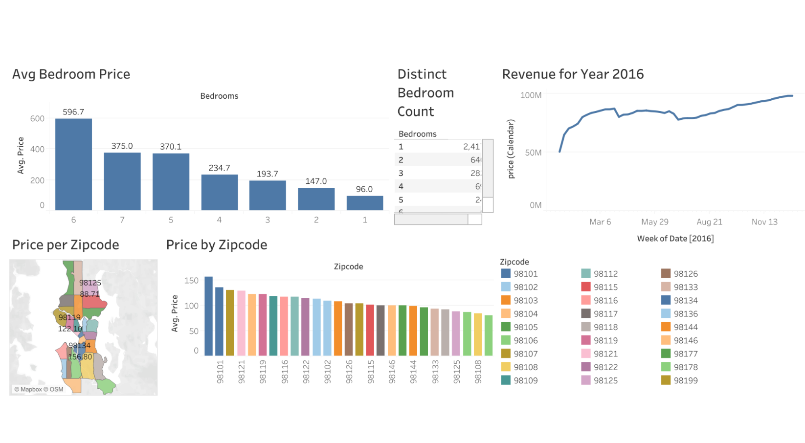
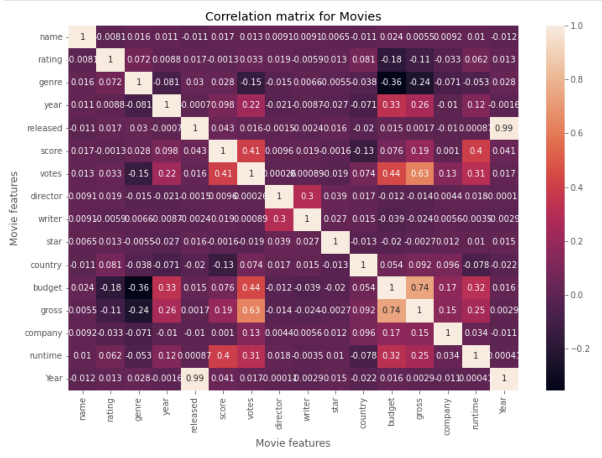
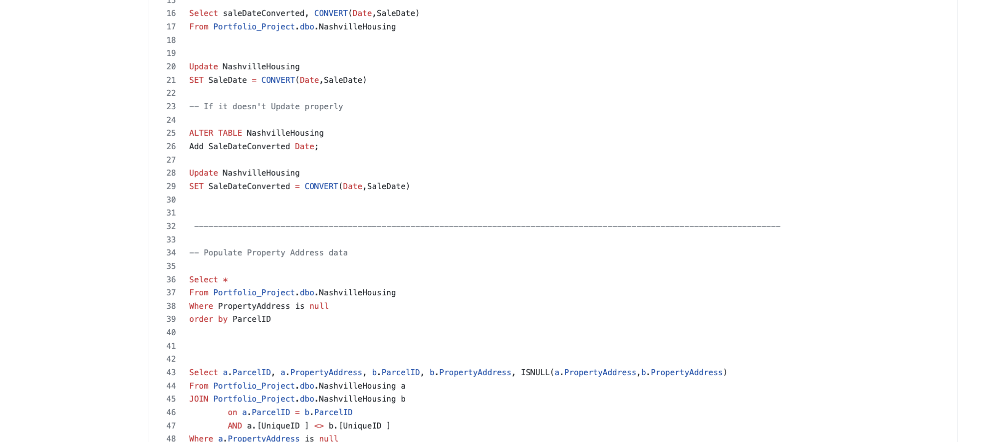
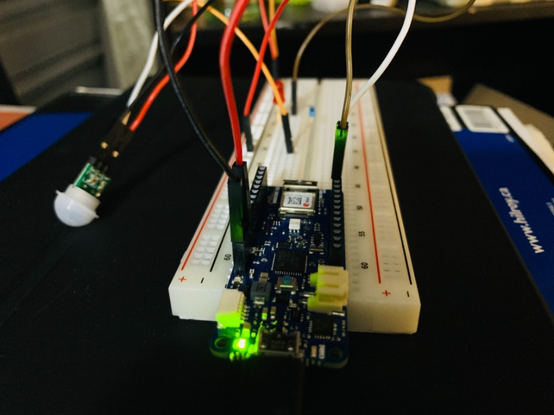

Pranav K Jha
Location: Montreal, QC | Willing to Relocate: Yes
Interests:
Data Analysis/Science Skills:
Data Analytics: SQL, Excel, Python
Data Visualization: Tableau, PowerBI
Data Manipulation: Data Cleaning, Transformation, Wrangling
Data Mining and Extraction: Web Scraping, API Integration
Big Data Technologies: Hadoop, Spark
Cloud Platforms: AWS, Azure, Oracle Cloud, MongoDB Atlas
Project Management: Trello, Jira
Statistical Analysis: Hypothesis Testing, Regression, Time Series
Machine Learning: Supervised/Unsupervised Learning, Classification, Clustering
Natural Language Processing (NLP)
Software Development Skills:
Programming Languages: Java, Python
Web Development: HTML5, CSS3, JavaScript, jQuery, TypeScript, React, NodeJS, ExpressJS, EJS, Django, WordPress, Axios
API Development and Documentation: REST APIs, Swagger, Postman
Cloud Services and Deployment: AWS, Oracle Cloud, Docker
Architectures: Microservices Architecture, CI/CD
Database and Data Management: SQL, MySQL, MongoDB
Software Development Methodologies and Tools: Scrum, SDLC, OOP, Data Structures and Algorithms, Unit Testing
Operating Systems and Environments: Linux/Unix Environments, CLI
Data Analytics and Science Expert
I possess a diverse range of interests and skills that revolve around the field of data analytics and science. With a strong foundation in this domain, I have honed my expertise in various technologies, enabling me to extract valuable insights from vast datasets and translate them into actionable business decisions.
Technical Proficiencies:
Programming: I am proficient in Python, utilizing it to perform data manipulation, analysis, and building machine learning models. My knowledge of Python allows me to automate data-driven processes efficiently.
Data Visualization: I have hands-on experience with Tableau, which enables me to create interactive and insightful visualizations that aid in better understanding complex datasets.
Data Management: Proficiency in SQL allows me to efficiently manage and query databases, streamlining data retrieval and analysis.
Advanced Excel: I leverage Excel's advanced functionalities to perform data cleansing, analysis, and complex calculations with ease.
Machine Learning: I have a sound understanding of various machine learning techniques and algorithms, allowing me to build predictive models and derive meaningful patterns from data.
Web Technologies: My knowledge of web technologies like HTML 5, CSS 3, JavaScript, and JQuery complements my data analytics skills. It enables me to create user-friendly and interactive web-based data visualizations and dashboards.
My passion for data analytics and science drives me to continuously explore and implement cutting-edge technologies and methodologies. As a result, I am adept at solving complex business challenges through data-driven insights, making a positive impact on decision-making processes. My interdisciplinary skills equip me to excel in a data-centric role, contributing effectively to the success of any data analytics or science project.
Message-Driven Data Processing with RabbitMQ and MongoDB

Developed a distributed data processing system that utilizes a microservice architecture, message queuing with RabbitMQ, and MongoDB NoSQL database to analyze educational cost and economic data in the United States. The system is developed using Java and leverages the RabbitMQ Java client library and the MongoDB Java driver to connect to a RabbitMQ message broker and MongoDB database, respectively.
Distribute System in Java

In this project, we developed a distributed software system using Java and Oracle Cloud Infrastructure to store and access audio files with their relevant attributes. Our system is thread-safe and uses an executor and concurrent hash map to handle client requests. We have also created an OpenAPI specification on SwaggerHub to document the system's endpoints and operations. The system has been deployed on the Oracle Cloud Infrastructure and is functioning as intended.
Web Development

My portfolio website is a showcase of my skills and experience in web development. I utilized HTML5 and CSS3 to create a clean, modern, and user-friendly design. The site is easy to navigate and highlights my experience, education, and projects in an organized manner. I put my attention to detail and design skills to work to ensure that the website reflects my passion for web development and my commitment to delivering high-quality work.
I aimed to make the website visually appealing and engaging, while also delivering important information about my background, skills, and experience. The website is responsive and works seamlessly on various devices, including desktop, laptop, tablet, and mobile, providing a consistent user experience to all visitors.
Overall, my portfolio website is a reflection of my dedication and expertise in web development, and I am confident that it will effectively communicate my qualifications to potential clients and employers.
COVID 19 Data Exploration

In this project, I developed my skills in data analysis and visualization by working with global Covid data on SQL Server. I performed a series of queries to uncover important insights related to the infection rate based on regional population, the number of deaths by location, and other relevant metrics. To present this information, I created a comprehensive dashboard using Tableau.
By working on this project, I not only honed my technical abilities, but also gained a deeper understanding of the impact of the Covid-19 pandemic across the world. I am proud to have contributed to a better understanding of this global crisis and I am eager to continue developing my skills in data analysis and visualization.
AirBnB
Data Exploration
In this project, I utilized Tableau to create a comprehensive visualization of the Seattle AirBnB Data for the year 2016 obtained from Kaggle. The visualization allowed me to gain valuable insights into various factors influencing the price and demand of AirBnB properties in Seattle, including seasonal patterns in the rental market and popular amenities.
The experience provided me with hands-on experience in data visualization and an opportunity to explore and understand real-world data.

{kind=link}
A Compact and Secure Anti-Theft Bike Mobile Application for iPhone Operating System (iOS) users
The proposed anti-theft solution for bikes is aimed at iOS users and comprises of hardware and software components. The hardware component includes GPS tracker, accelerometer, gyroscopic sensor and a microcontroller that can be installed easily on the bike. The software component consists of an iOS app that interacts with the hardware through Firebase cloud services. The app allows users to track their bike, receive push alerts about parked location and orientation changes, and view tracking history for up to a year. Users can also set the time interval to record GPS locations of their bike for up to an hour.
MOVIES DATA CORRELATION

In this project, I worked with a movies dataset and applied my skills in data cleaning and correlation analysis using Python in a Jupyter Notebook environment. The data cleaning process involved removing missing values and inconsistencies, transforming and normalizing the data, and preparing it for analysis. This project demonstrated my ability to identify and address potential issues in the data, and my skills in data cleaning techniques using Python.
Furthermore, the correlation analysis allowed me to identify relationships between different attributes of the movies data and understand the impact they have on the overall success of a movie. This experience has further honed my skills in data analysis, providing me with a deeper understanding of how to draw meaningful insights from data.
DATA CLEANING IN SQL

In this project, I worked on housing data for Nashville and used SQL to perform various cleaning operations to make the data more usable for analysis.
The data cleaning process involved removing inconsistencies and errors, transforming the data into a more suitable format, and ensuring the quality of the data for further analysis.
This project demonstrated my ability to work with large datasets, perform data cleaning operations using SQL, and effectively prepare data for analysis.
PIR Motion Sensor Alarm using Arduino MKR Wi-Fi 1010

I have designed a wireless motion detection sensor system using the Arduino platform to cater to the increasing demand for smart home security systems. This system gathers sensory data from the surrounding environment through a PIR motion sensor, and the Arduino interprets it for proper action. In case of any undesired activities, the alarms are activated, and homeowners are notified through the user's application. The system utilizes Arduino MKR Wi-Fi 1010, which has a built-in Wi-Fi module, allowing a connection between the user's application and the motion detection sensor system. My project showcases my proficiency in designing and implementing a secure and effective smart home security system.
Design Analysis of The Magnetic Levitation System
In this project, a suitable control system for the ECP Model 730 magnetic levitation system was designed. The project involved the development of a system model, identification of non-linearities, creation of a linearized model, and design of controllable, observable, and Jordan canonical forms for the open-loop system. A PID controller and a full-state feedback controller were designed, with simulation results provided. Additionally, the design of a full-order observer was presented. The project concludes with a comparative study between classical control theory design approaches and modern control theory design approaches.
Publications
1. P. K. Jha, S. S. Shree and D. S. Kumar, "An opportunistic-non orthogonal multiple access based cooperative relaying system over Rician fading channels," 2018 4th International Conference on Recent Advances in Information Technology (RAIT), 2018, pp. 1-5, doi: 10.1109/RAIT.2018.8388973.
2. P. K. Jha and D. S. Kumar, "Achievable rate analysis of relay assisted cooperative NOMA over Rician fading channels," 2018 4th International Conference on Recent Advances in Information Technology (RAIT), 2018, pp. 1-5, doi: 10.1109/RAIT.2018.8388972.
3. P. K. Jha, N. Kachare, K. Kalyani and D. S. Kumar, "Performance analysis of FSO using relays and spatial diversity under log-normal fading channel," 2018 4th International Conference on Electrical Energy Systems (ICEES), 2018, pp. 121-125, doi: 10.1109/ICEES.2018.8442405.
4. P. K. Jha, N. Mishra, and D. S. Kumar. "Challenges and potentials for visible light communications: State of the art." AIP conference proceedings. Vol. 1849. No. 1. AIP Publishing LLC, 2017.
5. N. Mishra, D. S. Kumar and P. K. Jha. "Performance analysis of dual-hop optical wireless communication systems over k-distribution turbulence channel with pointing error." AIP Conference Proceedings. Vol. 1849. No. 1. AIP Publishing LLC, 2017.
Fujitsu Canada, Inc. | Montreal, QC
Tech Support Engineer
8/2023 – Present
Serving the Government of Alberta as a client of Fujitsu.
Managing ticketing tasks using ServiceNow for streamlined operations, providing Touch/Smart Hands Support for Network Devices & Servers, offering remote assistance for various technical issues, troubleshooting mobile device concerns, diagnosing and resolving network, device, and computer configuration challenges.
MKJHA Consulting | Severn, MD, US (Remote)
Data Science Intern
Sep 2021 – June 2023
Conducted data analysis and utilized computer vision techniques to develop and implement machine learning algorithms for real-time vehicle classification using live video streaming.
Processed and analyzed large volumes of video data, collaborating with a team of data scientists and engineers to improve model accuracy and performance.
Gained hands-on experience in data science methodologies and real-world applications in the transportation domain, working with Python, TensorFlow, and OpenCV.
Assisted in exploratory data analysis, data preprocessing pipelines, and evaluation and optimization of performance metrics for the vehicle classification models.
CONCORDIA UNIVERSITY | Montreal, QC
Machine Learning/Deep Learning Research Assistant
Sep 2018 – Aug 2021
Improved deep learning models to achieve higher levels of efficiency and accuracy in data processing tasks.
Focused on domains like image recognition, natural language processing, and time series analysis.
Considered factors such as computational efficiency, model complexity, and dataset characteristics to optimize performance.
NIT TRICHY | Trichy, IN
Research Assistant
Feb 2016 - May 2018
Analyzed data of Cooperative Relaying Systems in Wireless Communications and published results in multiple IEEE conference publications
INFONET Solutions| Pune, IN
Executive-IT
Jun 2012 - Jan 2016
Managed faults, implemented security measures for network resources, resolved routine issues, and ensured regular backup and restoration of critical assets.
Concordia University | Montreal, QC
MEng
Electrical and Computer Engineering
May 2023
West Bengal University of Technology | Kolakta, IN
Bachelor of Technology (BTech)
Electrical and Computer Engineering
Jun 2012